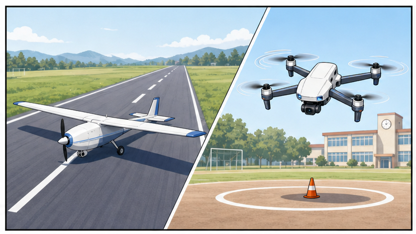
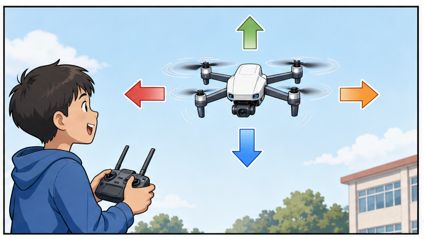
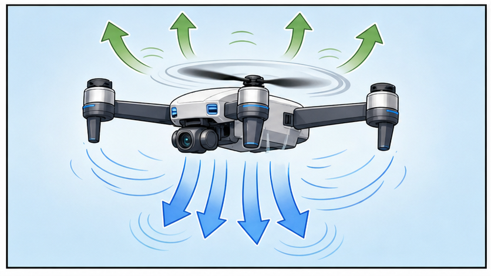
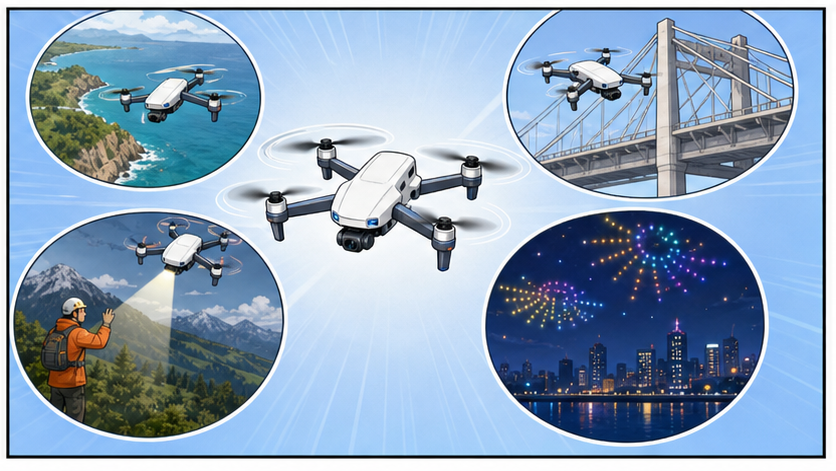

1
場地需求小
固定翼通常需要跑道或助跑空間，四軸可以原地起飛、降落和懸停。學校操場只要規劃安全區，就能練習基本操作。
重點：不用跑道，先學會安全起降。不是因為四軸最厲害，而是因為它最適合拿來學「飛行怎麼被控制」。

固定翼通常需要跑道或助跑空間，四軸可以原地起飛、降落和懸停。學校操場只要規劃安全區，就能練習基本操作。
重點：不用跑道，先學會安全起降。
四軸可以上升、下降、前進、後退、左右移動。學生看著它的動作，再對照遙控器和馬達轉速，比較容易理解「控制」是怎麼發生的。
重點：看得到方向，就比較學得會。
螺旋槳把空氣往下推，空氣也把無人機往上推。這正好能銜接自然課的作用力與反作用力，後面再接反扭矩和馬達配置。
重點：空氣往下，無人機往上。
空拍、巡檢、救災、燈光秀，很多生活案例都能看到四軸。它不只是玩具，也是一種能幫人完成任務的工具。
重點：從生活例子看懂科技用途。後面講結構、玩模擬器、練習控制時，我們都會用四軸無人機當主角。